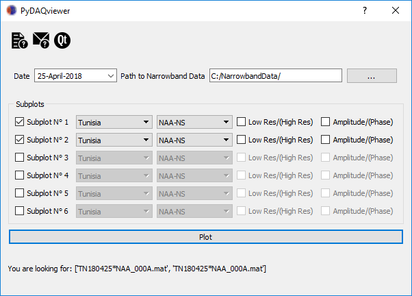

PyDAQviewer Tutorial
Ahmed Ammar [1, 2] (ahmed.ammar at fst.utm)
[1] University of Tunis El Manar, Faculty of Sciences of Tunis, LSAMA Laboratory
[2] ISWI-Tunisia.
Mar 25, 2018
Summary. The VLF PyDAQviewer (Data Acquisition data viewer)is a Python program designed to make it easier to view and analyze data acquired with your AWESOME receiver. Tis Program is inspired from the matlab PyDAQviewer program developped by Benjamin Cotts at Stanford University and distribuded for the use of AWESOME-VLF comunity at the ISWI network.

Table of contents
The VLF PyDAQviewer
Which Data to Plot
Narrowband data file naming convention
Folder Path Convension
SiteInfo
The VLF PyDAQviewer
The program is broken up into three main sections:
- Entering which data you wish to plot
- Find/plot data
- Viewing/interaction with data
Which Data to Plot
Narrowband data are the amplitude and phase of specific transmitter frequencies received at a given location. This dataset is modest, on the order of 100 MB per day per site, and can be fairly easily transmitted from remote field sites over the internet. This data can be archived continuously.
The data are saved in a Matlab v4 format, which can be easily read in Matlab. The format consists of a header with basic information, followed by the data itself. Matlab v4 is an easy format. The specific format is detailed below, so that it is machine-readable in any digital application.
Narrowband data file naming convention
Narrowband filename convension is like discribed in the
International Space Weather Initiative (ISWI) Data Policy (version 1.3.1) for AWESOME receiver.
XXYYMMDDHHMMSSZZZ_ACCT.mat
- XX - Station ID
- YY - Year
- MM - Month
- DD - Day
- HH - Hour
- MM - Minute
- SS - Second
- ZZZ - Transmitter Callsign
- A - Not relevant
- CC - 00 for N/S channel, 01 for E/W channel
- T - Type of data
- A is low resolution (1 Hz sampling rate) amplitude
- B is low resolution (1 Hz sampling rate) phase
- C is high resolution (50 Hz sampling rate) amplitude
- D is high resolution (50 Hz sampling rate) phase
- F is high resolution (50 Hz sampling rate) effective group delay
Folder Path Convension
Before running the PyDAQviewer, make sure the main folder that is used to store your Narrowband data is
'NarrowbandData/'.
The path to a given data is something like: 'C:/NarrowbandData/SiteName/Year/MM/DD/' (e.g. 'C:/NarrowbandData/Tunisia/2018/03/25/'). Note that this can be on any drive root drive: C-Z including DVD drives etc, so if you burn data to a DVD burn it in the same folder and the PyDAQviewer will be able to find it.
Select date:
Figure 1: Select date of the recorded data from the calendar.
SiteInfo
This file is just simple .py files in which you will enter data. For ReceiverInfo you will enter two columns of data (Figure 1), the first column of the file is the name of the site (as defined in the VLF DAQ program
which acquires the data).